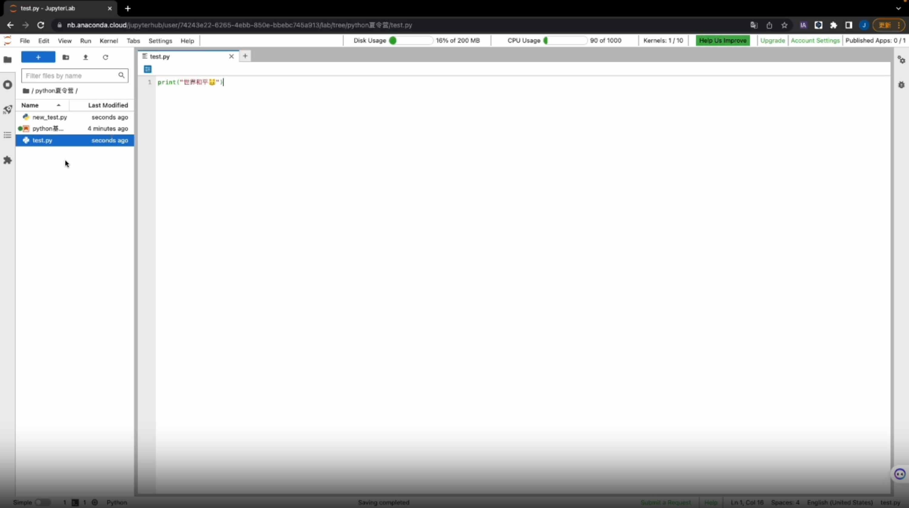
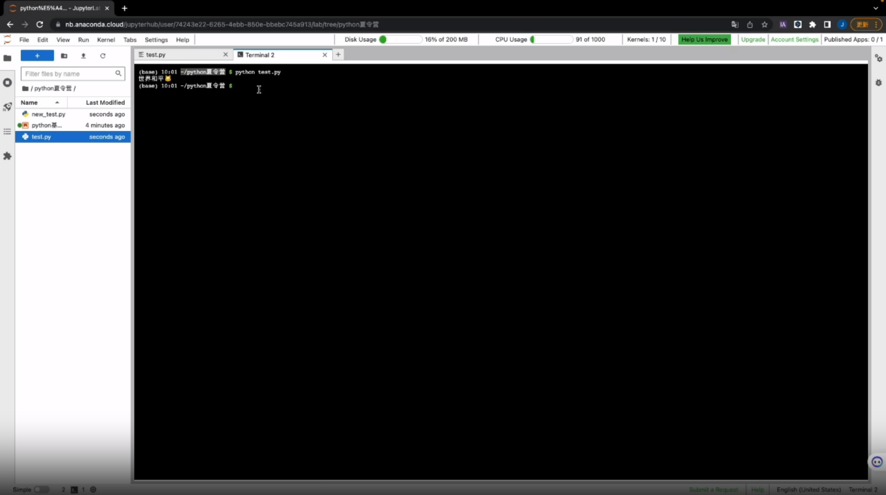

print("世界和平")世界和平Python是一种流行的、易学易用的编程语言，它开发于1991年。Python的设计注重代码的可读性和简洁性，这使得它成为了初学者和专业开发者喜爱的语言。
截止到目前，学习Python的人数相当之多，它在计算机编程教育和软件开发领域的受欢迎程度非常高，甚至可以认为Python是世界上最受欢迎的编程语言之一。
使用Python，你可以编写各种类型的程序，从简单的脚本到复杂的网站和应用程序，甚至是人工智能和数据科学领域的应用。
仔细看Python的标志——两只蓝色和黄色的小蟒蛇，你今后会在许多地方见到它。在本次夏令营中，我们会带领你们使用这个强大、灵活且有趣的编程语言，学习如何对数据进行清洗，以及对我们清洗完成的数据进行可视化处理。
在我们的日常电脑使用中，我们会遇到各种各样的文件，它们的类型和功能各不相同。例如，mp4文件通常是用来存储音视频数据，而pdf文件则是一种用于存储文本和图片的格式。
Python文件是一种特殊类型的文件，通常使用.py扩展名。这些文件包含用Python编程语言编写的代码。与其他文件不同，Python文件并不直接存储音视频或图像等内容，而是用于存储计算机程序的源代码。
在Python文件中，我们可以使用Python编程语言来编写程序，这些程序可以完成各种任务，比如数学计算、数据处理、网络操作等。一旦编写完成，我们可以通过Python解释器来执行这些文件中的代码，让计算机按照我们编写的指令来完成相应的任务。
总的来说，Python文件是一种特殊的文本文件，它们承载着用Python语言编写的程序代码，为我们提供了一种强大且灵活的方式来控制计算机的行为。
在我们的夏令营中，我们使用JupyterLab作为我们的开发环境。JupyterLab是一个交互式的开发环境，我们可以使用它编写、运行和分享代码。另外，JupyterLab已经做好了Python环境的配置，对于新手来说，可以省去很大一部分工作，更轻松的进行Python学习。
首先，我们进入JupyterLab的界面。通常来说，你的默认浏览器会显示一个网页，这就是JupyterLab的用户界面，这个界面类似于文件资源管理器，你可以在其中浏览文件夹和文件。
然后，我们点击创建一个Python File。这样一来，我们就成功创建了一个.py文件了，但是我们的文件中还没有代码，需要我们进行进一步的操作。
在左边的目录中，我们可以看到我们新建的文件，通常来说，它会被命名为Untitled.py，我们可以在目录中直接修改文件名。
点击进入Python文件之后，我们就可以开始撰写代码了，试试看，输入：
print("世界和平")世界和平暂时你还不领会这段代码的含义，但是没关系，在后面的教程中，我们会慢慢来告诉你。

接下来，回到主菜单(你可以点击标题栏旁边的’+‘)，点击’Terminal’，你就会进入到终端(这是一个一个黑色的窗口)，在这里输入你刚才创建的文件的名称，然后按下回车键。你就会发现，刚才我们输入在Python文件中的代码被执行了，终端中输出了：
世界和平
我们刚才在Python文件中输入的代码的含义就是，打印”世界和平”这四个字。

在终端中，输入python进入python解释器后，即可运行python代码
通过刚才的操作，你可能会发现，运行Python文件的步骤可能有些太多了，而且我们也没办法直观的看到我们的代码所产生的效果。
在我们所使用的JupyterLab中，有一种更简便的方式来运行我们的代码，那就是使用.ipynb格式的文件。
.ipynb文件是Jupyter Notebook的保存格式，它是一个JSON（JavaScript Object Notation）格式的文本文件，其中包含了Jupyter Notebook的所有内容，包括代码、输出结果、文本说明等。
当我们打开一个.ipynb格式的文件后就会发现，这里的界面与刚才的Python File界面不同，界面中有一些块状元素，这就是我们撰写代码的地方。
.ipynb格式的文件中的块分为两类，一类是markdown块，用于书写文本内容，另一类就是代码块，我们可以很方便地在其中输入代码，然后点击标题栏下方的运行按钮，或者按下Shift + Enter就可以执行我们的代码。

试试看新建一个.ipynb文件，然后输入刚才的代码，你会很直观的看到代码的运行结果。
现在，你自己尝试一下新建一个.ipynb文件并运行，这会帮助你加深对文件运行方法的理解。
在后面的学习中，我们会经常用到.ipynb文件，大家可以从微信群中下载所需要用到的文件，然后上传到JupyterLab中打开。
在之前的学习中，我们了解到Python是一种编程语言，与自然语言（例如汉语）截然不同。虽然它们是两种不同的语言类型，但编程语言与自然语言相似，都需要遵守语法规则。这些语法规则用于规范句子和表达式的结构，以确保正确的表达和理解。
因此，不要感到畏难，你可以像学习一门自然语言一样来学习Python。一旦掌握了Python的基础语法规则，你就可以与计算机很方便地进行交流，编写出功能强大的程序。
现在，打开你的JupyterLab，新建一个.ipynb文件，让我们尝试编写一个简单的表达式，通过这个例子初步认识一下Python的语法规则。
通俗地说，在编程中，表达式就是一段产生值的代码。
下面是一些简单的表达式，用于帮助你理解：
算术表达式：2 + 3 * 4 （计算结果为 14）
逻辑表达式：a > b and c <= 10 （根据变量a、b和c的值判断是否满足条件）
2023 + 40906113在上面的例子中，我们编写了一个简单的算术表达式，用来计算2023与4090的和。在执行后，我们可以在输出区域看到运算结果：
6113
现在，让我们尝试另外一种表达式：逻辑表达式。
9 > 1True上面的表达式对9和1的大小进行了判断。由于9 > 1成立，因此程序返回True；相反，如果我们编写1 > 9，则会返回False。在这里，True和False统称为布尔值，在后续的数据类型课程中，我们会详细地介绍它们。
在编写代码时，难免会遇到错误。
如果我们让一个未赋值的变量(也就是一个空值)与数字进行比较会发生什么呢？现在，试试看删除上面的表达式中>右侧的数字1，重新执行代码。
9 > SyntaxError: invalid syntax (1639543893.py, line 1)在上述代码中，我们进行了一个比较运算，但只填入了一个值，导致程序报错。
终端提示我们这个错误叫做SyntaxError，这个错误通常表示我们的代码语法写错了，不符合Python的规则。换句话说，我们的代码不能被计算机正确地理解和执行。遇到这种情况，我们需要检查代码，确保语法正确，以便程序能够顺利运行。
现在，我们已经初步了解了Python的语法规则，就像我们在自然语言中需要遵守语法规则一样。在接下来的学习中，我们将一起深入探讨Python的语法规则，并逐步提升我们的编程能力。
变量是用来存储和表示数据的一种抽象概念。它们为数据赋予了一个标识符，以便我们可以在程序中引用和操作这些数据。通过变量，我们可以方便地在代码中存储和访问数据，并在程序执行过程中对数据进行修改和处理。
在Python中，可以使用赋值操作符（=）来给变量赋值。在=左侧的元素就是变量名，在=右侧的元素则是存储在变量中的值。赋值操作就是将右侧的数据或表达式的值存储到变量中。在赋值时，等号右侧的值先被计算，然后再赋给等号左侧的变量。如：
x = 5
name = "John"
print(x)
print(name)尝试上面的代码，这会有助于帮助你理解赋值操作。
一旦变量被赋值，我们可以在程序中使用它们。通过变量名，我们可以获取存储在变量中的值，并在代码中进行各种操作。
试着在JupyterLab中输入下面的示例代码，这将会调用变量x计算其平方并打印结果：
x = 5
square = x * x
print(square)变量的值可以随时更改。通过简单地再次使用赋值操作符，我们可以为变量分配新的值。新值将覆盖之前的值。
下面的例子向我们演示了如何为我们在上面定义的变量重新进行赋值：
x = 10
name = "Jack"
print(x)
print(name)现在你已经了解了变量的基础概念。接下来，你可以试试看如何将字符串”Hello, Python!“赋值给一个名为message的变量，并输出它的值。
关于字符串的概念，我们将在后文中向你详细讲解。
在Python中，注释就像是给代码做注解或添加备注的便签。计算机不会执行注释，它们只是供开发者阅读和理解代码时参考的文本。注释对于让代码更易读、更易维护非常重要。通过注释，其他人（包括未来的自己）可以更轻松地理解代码的目的和功能。就像在写作文时加上小纸条一样，注释帮助我们更好地组织思路和理解代码。
单行注释是通过在一行代码后面使用井号#符号添加的注释。任何位于#后面的文本都会被Python解释器忽略，不会对代码产生影响。单行注释通常用于对代码进行简短的解释、备注或说明，帮助开发者理解代码的功能和意图。
看看下面的代码，这是单行注释的两种形式：
# 这是一个单行注释
print("Hello, World!") # 打印输出文本多行注释是通过使用三个单引号'''或三个双引号"""将多行文本包围起来，从而形成一个注释块。这种注释方式通常用于注释较长的段落或函数的文档说明，以提供更详细的代码解释和描述。例如：
"""
这是一个多行注释，
用于提供更详细的代码解释和描述。
可以跨越多行，非常方便。
以下是代码的主要功能：
- 输入用户的姓名
- 打印欢迎消息和姓名
"""
name = input("请输入您的姓名：")
print("欢迎，" + name + "!")如果想要一次性注释多行代码，可以先用鼠标选取要注释的多行，然后按下Ctrl+/进行注释。这样，选中的所有行都会被自动添加注释符号，快速实现多行注释的操作。
撰写和阅读注释的规范：
清晰明了： 注释应该简洁明了，用简单的语言描述代码的目的和功能。
位置准确： 注释应该位于需要解释的代码附近，以便更容易理解其含义。
避免多余注释： 不要对显而易见的代码添加过多注释，注释应该解释那些可能不容易理解的部分。
保持更新： 随着代码的更改和更新，确保注释保持与代码同步，避免出现不一致的情况。
注释风格： 遵循通用的注释风格，如使用中文或英文注释，根据约定使用单行或多行注释。
在Python中，行是代码的基本组成单位，代表着一条指令或表达式。Python作为一种解释性语言，代码由一行一行的语句构成，每一行通常包含一个完整的操作或计算。无需特别处理换行符，Python解释器会自动识别代码中的换行，可以通过按下Enter键或使用续行字符\将代码分成多行，使代码更易读。每当解释器遇到换行，它就会开始执行下一行代码，一步步按顺序执行整个程序。这样的编码方式让Python代码看起来简洁、清晰，并且方便理解和维护。
总结有关行的知识点，我们可以得到下面这些注意事项：
Python是一种解释性语言，代码由一行一行的语句组成，它们由换行符\n来进行分隔。
每一行通常包含一个完整的语句或表达式，用于执行特定的操作或计算。
代码从上到下依次执行，每执行一行，计算机会按顺序执行相应的操作。
下面的例子，向我们展示了Python中行最重要的功能：语句分隔
print("Hello,") # 第一行代码
print("Python!") # 第二行代码在一些情况下，行可能会非常长，为了让代码更美观，我们可以使用反斜杠\作为续行字符将一行代码分成多行。例如：
long_line = "This is a very long line, and we want to split it into multiple lines \
for better readability."在上述代码中，我们演示了将一个特别长的字符串赋值给变量long_line。为了使代码更易读，我们在字符串中间使用了\进行换行。
另外，你还可以使用括号(圆括号、方括号、花括号)来隔行编写多行语句，就像下面的例子一样：
result = (10 + 20 +
30 + 40 +
50)
print(result) # 输出：150在Python中，缩进是一种用来表示代码层次结构和代码块之间嵌套关系的重要机制。在下面的要点总结中，你可以了解到缩进的注意事项：
在Python中，缩进是指代码块中的空白空间(缩进通常使用空格或制表符，但在同一个代码块中必须保持一致)。
缩进用来表示代码的层次结构，表明代码块之间的嵌套关系，以及代码块的开始与结束。
缩进是Python中定义代码块的唯一方法。
在同一代码块中的语句必须具有相同的缩进量，以表示它们属于同一层次的执行范围。
在Python中，代码块由缩进来表示，以冒号:引入。代码块是一个逻辑单元，包含一组组关联的语句，例如条件语句、循环和函数定义
看看下面的代码，展示了缩进在代码块定义中的应用。
def draw_heart():
# 第一层缩进，函数的代码块开始
print(" ❤️ ❤️ ")
print("❤️ ❤️ ❤️")
print("❤️ ❤️")
print(" ❤️ ❤️")
print(" ❤️ ")
# 第一层缩进，函数的代码块结束
# 主程序从这里开始执行
print("我画了一个可爱的心形：")
draw_heart()我画了一个可爱的心形：
❤️ ❤️
❤️ ❤️ ❤️
❤️ ❤️
❤️ ❤️
❤️ 在上面的代码中，我们定义了一个函数(函数的知识以后会讲到)，使用缩进定义了它的代码块。
缩进造成的错误，应该名列 Python 错误榜第一
在Python中，缩进是强制性的，它对代码的执行和逻辑起着重要作用。通常情况下，推荐使用4个空格作为缩进量，这有助于代码的可读性和与他人合作时的效率。
养成良好的编码习惯有助于提高代码质量：
保持一致的缩进：在整个代码中使用相同数量的空格或制表符进行缩进，这有助于代码的一致性和可读性。
使用合适的缩进级别：根据代码逻辑嵌套关系，选择适当的缩进级别。通常建议每个缩进级别使用4个空格。
使用注释：在关键的代码部分添加注释，解释代码的目的和功能。注释可以提高代码的可读性和可维护性。
注意行的长度：尽量将每行代码控制在适当的长度范围内，通常推荐不超过80个字符。可以使用换行符（）或括号来换行。
遵循这些建议，可以使代码更加优雅、易读，并且有助于与他人合作时的沟通和协作。编写高质量的代码离不开良好的编码习惯。